Step 4m: More Test Automation
Contents
Introduction
In the previous step we showed how to create test harnesses based on the Signal Builder block and the Test Sequence block. Next we automated the test execution of the Signal Builder harness using the Test Manager. We ignored the test automation of the Test Sequence block based harness. There are methods we can use to automate the test execution of harnesses based on the Test Sequence blocks and other types of blocks used to author test cases in Simulink. In addition, there are methods we can apply using thet Test Manager alone that will not require a test harness.
In this step we will look at additional test specfication or authoring methods:
- Using spreadsheets alone for applying test vectors without a harness plus support for custom spreadsheet formats
- Using the Signal Editor block in a harness to replace Signal Builder for authoring test vectors
- Using variant based Test Sequence blocks in a harness to overcome the one Test Sequence per test harness limitation
For all of the above methods we will walk through an example that will include test automation in the Test Manager.
All of the examples will be based on the "short" test plan that includes only (6) test case. To open the test plan document – click here.
Verification and Validation Tools Used
- Simulink Test
- Signal Editor Block (part of Simulink)
Importing a Spreadsheet Test Specification
In the Test Manager, there is support for importing the spreadsheet without a need for a test harness. The spreadsheet format required includes "time" in the first column and then each input signal in its own column. If expected outputs are specified in the spreadsheet, then the "time" column is repeated after the last input signal followed by each expected output signal in its own column.
To import and execute the spreadsheet based test specification, do the following:
1. Open the CruiseControl.slx model - click here.
2. Open the Excel file that contains the test vectors to import - click here.
For each of the 6 test cases described in the test plan document, there is a corresponding worksheet. Note the format used for the time, input and expected output vectors as described above.
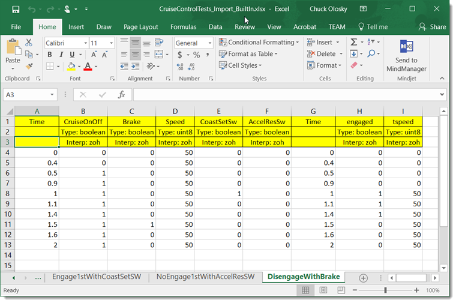
3. Open the test file "CruiseControlTests_BuiltIn.mldatx" in the Test Manager - click here
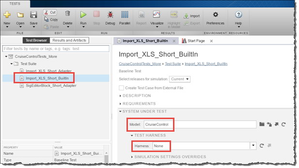
4. Navigate to the "Import_XLS_Short_BuilIn" test case.
We will be importing from the spreadsheet and mapping the input data directly to the component model without a test harness. The test case has been created and we will walk through the configuration steps to understand how to use an external spreadsheet in the tool.
5. Open the INPUTS section and select Mapped to open the input port mapping dialog.
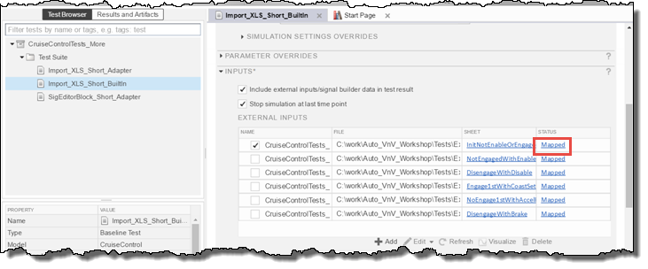
6. In the mapping dialog, the spreadsheet file has been configured and expand the SHEETS AND RANGE SPECIFICATION to see the columns "A:F" from the first worksheet have been selected for input mapping.
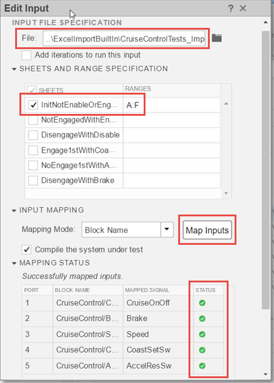
7. Select Map Inputs to map the spreadsheet inputs to the model inports. Check the status to see all ports have been mapped successfully as shown above.
8. To import the expected outputs, open the BASELINE CRITERIA section and select the first sheet hyperlink to open the baseline import dialog.
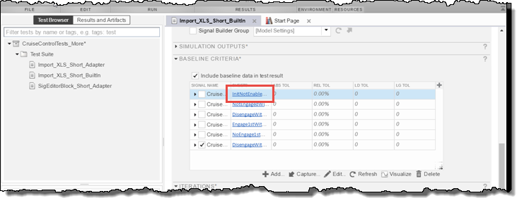
9. In the baseline dialog, the spreadsheet file has been configured and notice the SHEETS AND RANGE SPECIFICATION was set to columns "G:I" from the first worksheet to import baseline time and expected outputs.
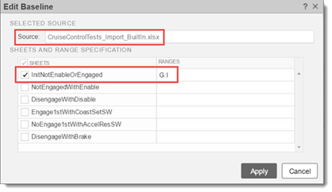
10. To configure the ITERATIONS, select Auto Generate and check External Input and Baseline to iterate over these sets.
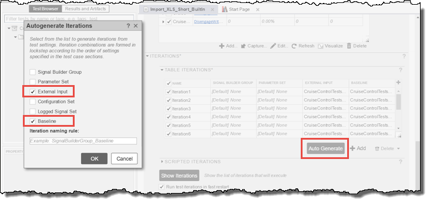
The test case based on the imported spreasheet is now ready for test execution.
11. Run the test case and analyze the results which include the External Inputs, Simulation Output, Baseline and the Baseline Criteria Result
Automating the Spreadsheet Import
The previous section used a spreadsheet format supported by the Test Manager. The spreadsheet matched the inputs/outputs of the model and was manually imported into the test case. What if we could automatically create the spreadsheet and automatically import the spreadsheet into the test case? The answer is Test from Spreadsheet.
Let's explore this feature:
1. From the main Test Manager menu select New/Test from Spreadsheet.
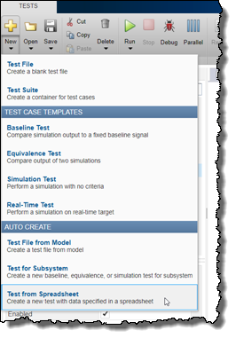
2. Select Create a test template file for specifying data in the Data dialog. If you select Use existing test data from a spreadsheet a test case will be created from an existing spreadsheet. Press Next.
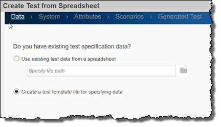
3. Verify "CruiseControl" has been entered for Model and "None" for Harness in the System dialog. Press Next.
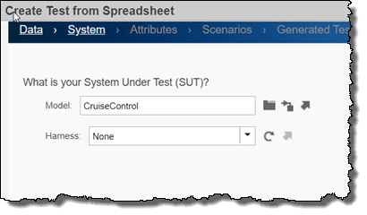
4. Verify Inputs and Comparison signals are selected. Verify Yes, include all attributes in the spreadsheet is selected in the Attributes dialog. Press Next.
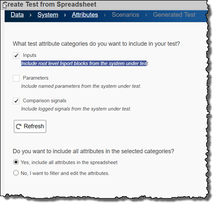
5. Use the default settings in the Scenarios dialog. Press Next.
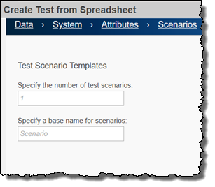
6. Enter "Import_XLS_Auto" for the test file and spreadsheet name. Press Done.
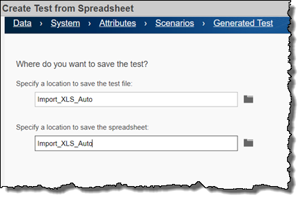
The test case "Import_XLS_Short_BuiltIn" used the same format that was created with the template wizard.
7. Replace the spreadsheet file with "CruiseControlTests_Import_BuiltIn.xlsx" found in the ".\Tests\ExcelImportBuiltIn" folder.
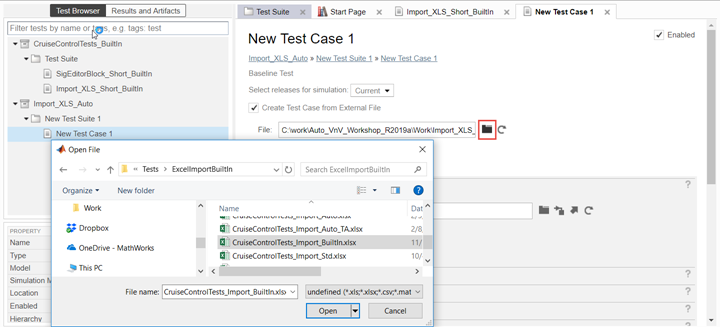
8. Run the tests.
Modifications to the test case spreadsheet can now be automatically imported into the test case without any additional steps.
Signal Editor Harness Creation and Test Vector Authoring
In the previous step, we used a harness based on a Signal Builder block. A new but similar block was introduced to replace the Signal Builder block that has many of the original block features but it adds the ability to:
- Create/edit signals in a tabular manner
- Specify the signal data types
- Set the interpolation method
The Signal Editor block is supported by Simulink Test for harness creation or test automation in the Test Manager. The following steps detail the method to create a Signal Editor based test harness. To open an existing, pre-built Signal Editor harness that we will use in the Test Manager:
1. Navigate to the test case "SigEditorBlock_Short_BuiltIn".
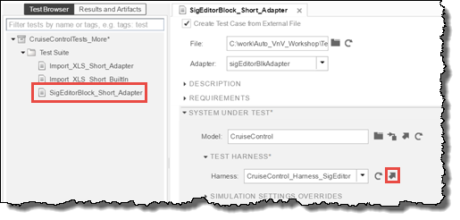
2. Open the test harness "CruiseControl_Harness_SigEditor".
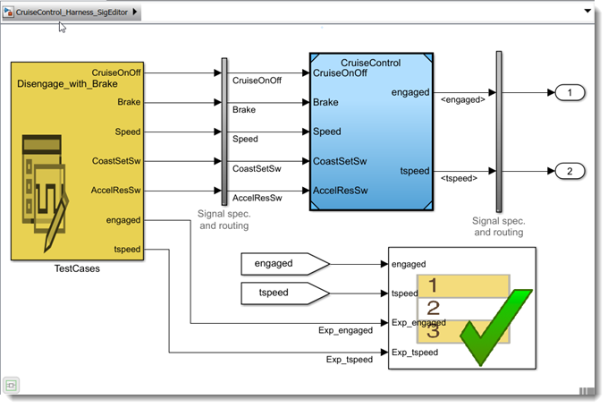
The test harness was created by performing the following steps:
1. Create a harness based on selecting the Signal Editor as the source and default outport blocks for the sink plus select "Add separate assessment block".
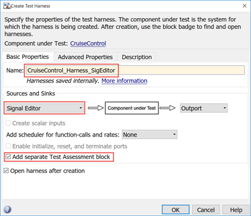
Initially the outport signals will not line up until we had a scenario mat file that contains the test case datasets with the individual signal test vectors.
2. Open the Signal Editor block dialog and enter the File name by browsing to the "CruiseControl_Short_SigEditor.mat".

3. Launch the Signal Editor.
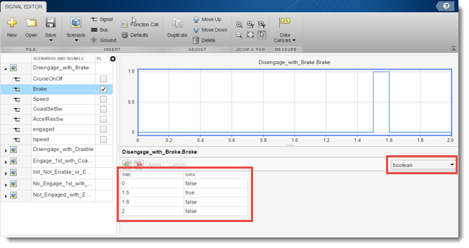
4. In the Signal Editor dialog experiment with the tabular editor and select the correct data type. Try the other features to see how to add test cases and signals.
5. Close all dialogs and manually connect the Signal Editor block.
6. Connect the outputs and expected outputs to the "Test Assessment" block. Add the verification logic to the block.
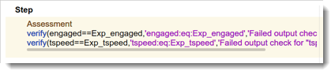
One of the benefits with a test harness that contains the test case vectors is that enables simulation testing outside of the Test Manager. The test cases may be executed, debugged and refined before test automation.
Automating Signal Editor based Test Execution
The Signal Editor based harness is directly supported in the Test Manager. We will configure a test case to automate the execution of this test harness.
Let's go through the Signal Editor example by doing the following:
1. Navigate to the test case "SigEditorBlock_Short_BuiltIn".

Notice the test case type is a "Simulation Test" since the assessment will be done in the "Test Assessment" block.
2. Open the INPUTS section to see how the Signal Editor has been configured.
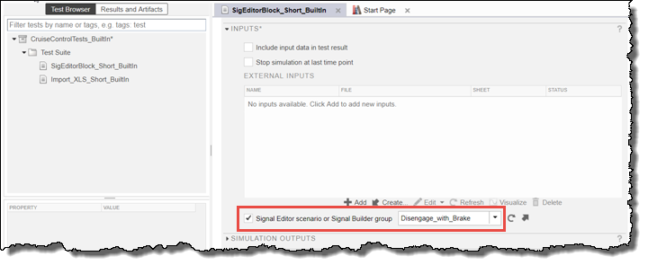
3. Open the ITERATIONS section and then the TABLE ITERATIONS section to see how the iterations have been configured to run all the Signal Editor scenarios.

4. Run the test case and analyze the results which include the Verify Statements and the Sim Output. For each iteration a different test scenario was selected by the script in the post-load callback.
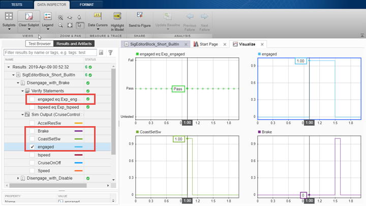
Using the Import Adapter for Custom Formats
In the previous section we imported a spreadsheet in a standard format that aligned with what the Test Manager was able to import using its built-in functions. What if you had existing test cases in your own format? Or would like additional functionality not supported with the built-in functions? The answer to importing custom formats and improving the test automation was delivered in a feature known as the Import Adapter. This feature provides an integrated way to create scripts to import custom formats based on a user selected test specification file.
We will be importing a custom format with the following features:
- Test vector inputs and expected outputs that can be specified in a sparse or "only on change" manner
- Parameter overrides (calibrations) that can be specified on a per test case basis
As before we will be mapping the directly to the component inports without requiring a test harness and using the baseline evaulation method.
To begin the review of the Import Adapter example, do the following:
1. Open the spreadsheet "CruiseControlTests_ImportAdapter.xlsx", a test specification based on a custom format - click here.
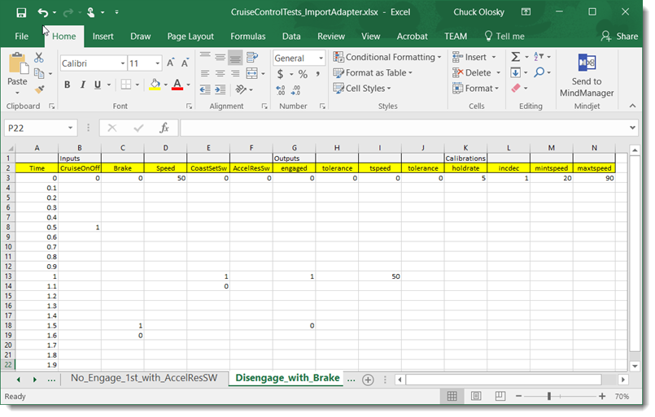
The first row contains headings for "Inputs", "Outputs" and "Calibrations" that will be used to delimit the content for the external inputs, baseline and parameter sets. The Import Adapter will completely configure test case without manual intervention once the import test file has been specified in the Test Manager.
2. Open the test file "CruiseControlTests_ImportXLSadapter.mldatx" in the Test Manager - click here
3. Navigate to test case "Import_XLS_Short_Adapter".
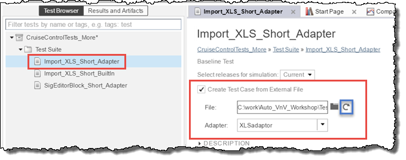
4. Check/uncheck the Create Test Case from External File to see how the additional UI controls appear for specifying the file and adapter. Notice the Adapter dropdown contains all registered adapters.
5. Press the Load from file button (shown above in blue) to begin the spreadsheet importing. A popup shows the import progress.
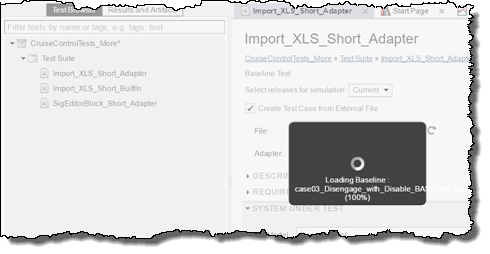
Once completed the individual sections can expanded to see the result of the spreadsheet import. The adapter has created sets of mat files and assigned these to the parameters, inputs and baseline in the test case.
6. Open the PARAMETER OVERRIDES section to check the imported parameter values from the spreadsheet. Notice the parameter set content is "read-only" since this is controlled by the spreadsheet. The individual mat files from the import have been assigned to each parameter set and the values can also be checked.
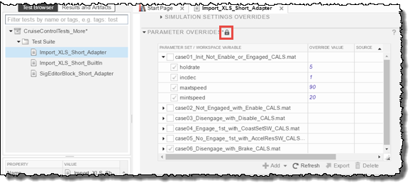
7. Open the INPUTS section to check the imported input vectors from the spreadsheet. Notice the input set content is "read-only". The individual mat files from the import have been assigned to each input signal set and the values can also be checked by selecting the Visualize button.
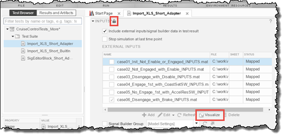
8. Open the BASELINE CRITERIA section to check the imported expected output vectors from the spreadsheet. Notice the baseline set content is "read-only". The individual mat files from the import have been assigned to each baseline set and the values can also be checked by selecting the Visualize button.
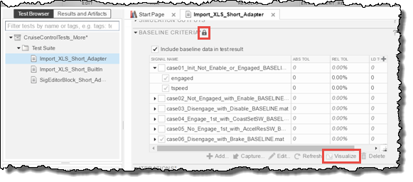
9. Open the ITERATIONS section to see the iterations have been configured based on the parameter, external input and baseline sets. Also the iteration has been named based on the worksheet name with a prefix "casenn_" to order the results.
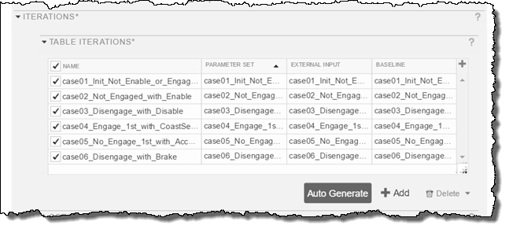
The import adapter is a custom created script to:
- Read the input spreadsheet file
- Parse the spreadsheet data into parameter, input and baseline data
- Get the data types and dimensions from the model
- Create the parameter, input and baseline mat files
- Clear the existing test case
- Assign the mat files to test case iterations
10. To see the implementation details of the import adapter script "XLSadaptor.m" - click here.

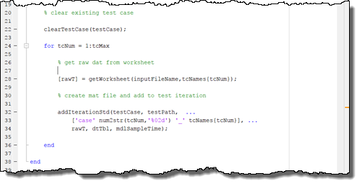
The test case based on the imported spreasheet is now ready for test execution that includes parameter settings per test case.
11. Run the test case and analyze the results which include the External Inputs, Simulation Output, Baseline and the Baseline Criteria Result. In the test case results, note the values from the PARAMETER OVERRIDES have been recorded.
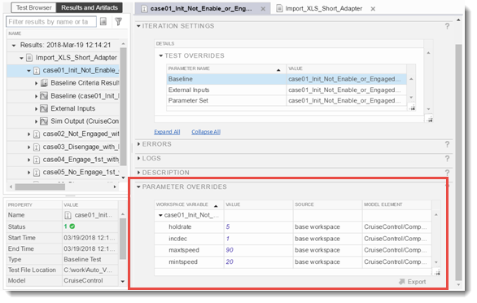
Summary
In this step we have shown more ways to automate the test execution based on built-in methods and other methods based on the import adapter feature. The import adapter was used to fill existing gaps and also to completely automate the test case creation from a spreadsheet with a custom format.
While going through the examples you can begin to see how these methods will fit into your workflows. The adapter is script based so it can be customized based on your existing or future needs.
When you are finished, close all models and files - click here.
Go to Step 5: Test Case Generation - click here.